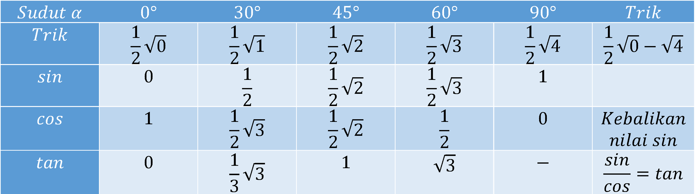

Trigonomteri
Home
Aljabar
Geometri
Statistika
Trigonomteri
Lihat di YouTube
Trik Cepat Mengingat Nilai Sudut Istimewa Trigonometri
Sumber: YT:Privat Al Faiz
Trik Mengingat

Untuk lebih jelasnya silahkan menonton video disamping